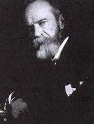
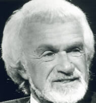

|
It may seem ironic that a book titled The Roots of Consciousness has little to say about the field of psychology itself. The primary reasons for this is that in developing itself as a scientific discipline, psychology has moved away from the fundamental question of the human psyche in order to address more measureable, tangible issues that could properly be addressed by existing scientific methods. Experimental psychology begins with the work of the mystical philosopher and scientist Gustav Theodore Fechner -- whose theories on the soul life of plants, animals and humans have been outlined in Section II. In 1860, Fechner published Elemente der Psychophysik. The concepts he used and the problems he defined have become the foundation of experimental work in sensory experience since his time. He developed the psychological measure known as the just noticeable difference (jnd) which is the smallest observable difference between two stimuli, e.g. two different lights. He determined that the relationship between the intensity of a physical stimulus and the just noticeable difference at that intensity is a logarithmic one. In other words, the difference in intensity between two very bright lights will have to be much greater than the difference in intensity of two very dim lights in order for a jnd to be perceived. Unlike the psychologists who followed in his footsteps, Fechner believed he had discovered a relationship between the individual consciousness and the sublime universal soul. While Fechner's work was an effort to bridge experimental science and the world of mysticism, it also fell within the philosophy of mind-body dualism, espoused by Rene Descarte. William James has been honored for generations as America's greatest psychologist.  William James At the turn of the century, he outlined the foundations for the discipline of psychology that would include cognitive science, transpersonal psychology (the investigation of spiritual and religious experience), and psychical research. Consciousness was placed at the center of James' approach: The first and foremost concrete fact which everyone will affirm to belong to his inner experience is the fact that consciousness of some sort goes on. "States of mind" succeed each other in him. If we could say in English, "it thinks," as we say "it rains" or "it blows" we should be stating the fact most simply and with the minimum of assumption.In his classic text, Principles of Psychology, James adopted the accepted philosophy of dualism as the appropriate underpinnings of psychology. However, in one of his most brilliant works, the posthumously published Essays in Radical Empiricism, James shifted to a position of Berkeleyan idealism, which eliminated the material world and made consciousness the only reality. He argued that implicit in empiricism -- the philosophy upon which science is based -- is that we know the world only as it appears in our consciousness of it as mediated by our sensory systems. Bishop Berkeley took this implication and used it to rule out the material world. Scottish philosopher David Hume, following Berkeley, carried this implication to its reductio ad absurdum, that all we know is a "flux of impressions," where they come from and where they are, we can never know. Building on these earlier empiricists, James formulated his "radical empiricism." Just as Berkeley denied the existence of matter, James denied the existence of both matter and consciousness: To deny plumply that "consciousness" exists seems so absurd on the face of it -- for undeniably thoughts do exist....Let me then immediately explain that I mean only to deny that the word stands for an entity, but to insist most emphatically that it does stand for a function.James formulated a monism in which "there is only one primal stuff...of which everything is composed." He called this stuff pure experience, which was prior to either material objects or consciousness. (See Appendix for a work-in-progress suggesting a rigorous mathematical approach to James' realm of pure experience.) German experimentalist Wilhelm Wundt's approach to psychology was represented in America by E. B. Titchener (1867-1927), who gave it the name structuralism. According to Titchener: All human knowledge is derived from human experience...and there can be no essential difference between the raw materials of physics and the raw materials of psychology.Following Wundt's lead, Titchener used introspection -- an approach to research which relied on verbal reports of internal mental states. Structuralists studied slices of consciousness that attempted to freeze a single moment or thin cross-section of the stream. They believed that, like chemists, they should search for the elements or basic building blocks of consciousness. This search proved unproductive. Consequently, the mainstream of American psychology, while originating with William James' concern with the fundamental role of consciousness, shifted direction dramatically. Many psychologists in past decades behaved as if they were embarrassed by the very name psychology. They would have preferred that the discipline be called behavioral science and that they be referred to as behavioral scientists rather than as psychologists. Yet, for historical reasons, they dominated the discipline that came to be known as psychology. John B. Watson, who introduced behaviorism in 1912, defined psychology as a natural science that studied behavior, not consciousness, by observation and experimentation. In the beginning, Watson treated consciousness as an epiphenomenon but he later states: Behaviorism claims that "consciousness" is neither a definable nor a usable concept; that it is merely another word for the "soul" of more ancient times. The old psychology is thus dominated by a kind of subtle religious philosophy. Many behaviorists went so far as to argue, along with positivist philosophers, that mind or consciousness did not even exist -- except as a concept used in popular language. From this sad perspective, the mind itself was considered a reification, a categorical error, a semantic confusion which did not, in any real scientific sense, exist. Normal human cognition for much of this period was almost a "taboo" subject. Howard Gardner, a contemporary Harvard psychologist now engaged in resurrecting cognitive science, maintained that "it is difficult to think of this [behaviorist] phase as other than primarily negative and regressive." According to Karl Pribram who has developed a holographic model of brain function, psychology has travelled full circle since the days of William James, so that consciousness is not a major topic of interest:  Karl Pribram (courtesy Thinking Allowed Productions) The history of psychology in this century can be charted in terms of the issue that dominated each decade of exploration. Early studies on classical conditioning and Gestalt principles of perception were followed subsequently by two decades of behaviorism. In the 1950s information measurement took the stage to be supplanted in the 1960s by an almost frenetic endeavor to catalog memory processes, an endeavor which culminated in the new concepts of a cognitive psychology. Currently, the study of consciousness as central to the mind-brain problem has emerged from the explorations of altered and alternative states produced by drugs, meditation, and a variety of other techniques designed to promote psychological growth.The newest fad in psychology is cognitive science which defines "mind" as system containing many components including sensory perception, memory, self-image, language, etc. By and large, cognitive scientists have used the information measurement and information processing approach to the brain-mind problem. The brain's wetware is viewed as akin to the hardware of computers and optical systems. Mental operations are analagous to programs and image constructions. With the rise of cognitive science, consciousness is once again gaining legitimacy within psychology. But for most of the late nineteenth and twentieth century the scientific and philosophical investigation of consciousness has occurred within the tradition that started with psychical research. The findings posed by psychical research, in my opinion, remain crucial for our understanding of the limits and nature of consciousness. Psychical research has developed many new methods since the time of William James. During the past eight decades, many hundreds of research studies have been published attempting to measure the ostensible powers of the psyche under conditions of rigorous behavioral constraints. Of course, we have learned more about the reach of the psyche than was known at the turn of the century. But not much more. Eighty years of experimental progress has
done little to convince the skeptical scientific community that direct
psychic interactions with the environment, not mediated by the sensorimotor
system, have been demonstrated. Lest we judge either science or psychical
research too harshly, we will do well to understand the findings of psychology
regarding the many types of error and folly to which the human mind is
susceptible. Such an understanding can help us appreciate the innate conservatism
of science in the face of psi research's extraordinary claims. It can also
shed much light on the dynamics of the debate between proponents and skeptics
of various psychic claims.
References . William James, Psychology. New York: Henry Holt, 1982, p. 152. . Jack R. Strange, "The Search for Sources of the Stream of Consciousness," in Kenneth S. Pope & Jerome L. Singer (eds.), The Stream of Consciousness. New York: Plenum Press, 1978. . William James, Essays in Radical Empiricism. New York: Longmans, Green, 1912, p. 3 . Ibid., p. 4. . E. B. Titchener, A Text-Book of Psychology. New York: Macmillan, 1909, p. 6. . James B. Watson, Behaviorism. New York: Norton, 1924, p. 3. . Philosopher Michael Grosso, author of The Final Choice: Playing the Survival Game (Waltham, MA: Stackpole, 1987) maintains that this academic denial of the psyche is an expression of Thanatos, the Freudian death instinct. In the following excerpt from my Thinking Allowed interview with him, he states: There are many aspects of our culture that do seem to express a death instinct. One illustration is that many contemporary academic philosophers, scientists and psychologists deny the existence of consciousness. They have gotten to the point of denying the existence of mind. That impresses me as a kind of a suicide, a denial of our very livingness. In other words, we use our intellect to deny our livingness. I think that we can see this process taking place on many different levels of our culture: the way we are destroying the environment, the way we use our intelligence to create weapons that threaten us with mass extinction. I see that as evidence for a death instinct.. Howard Gardner, The Mind's New Science: A History of the Cognitive Revolution. New York: Basic Books, 1985. . Karl H. Pribram, "Mind, Brain and Consciousness: The Organization of Competence and Conduct," in Julian M. Davidson & Richard J. Davidson (eds.), The Psychobiology of Consciousness. New York: Plenum Press, 1980, p. 47. . Indeed, the very name parapsychology reflects the peculiar twists of history. I would argue that, if the data of psi research has validity, it probably belongs within psychology. Yet, J. B. Rhine felt constrained to use the German term parapsychology to describe his research. It may have been a useful maneuver at the time. Rhine's Journal of Parapsychology has been in continuous existence for over fifty years (an indication of some success for this discipline). Perhaps, however, the name parapsychology denotes an artificial distinction which presently creates more problems than it solves. |